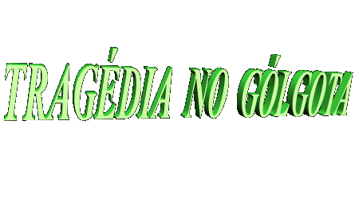
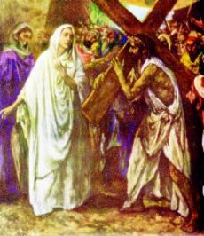
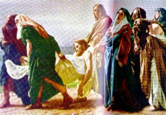

aparecesse
timidamente de vez em quando, espargindo uma tênue luz
sobre a terra de Judá.
aparecesse
timidamente de vez em quando, espargindo uma tênue luz
sobre a terra de Judá.
Era um dia cinzento,
com pesadas nuvens ocupando todo o céu, muito embora o sol aparecesse
timidamente de vez em quando, espargindo uma tênue luz
sobre a terra de Judá.
Um vento intermitente e incômodo varria aquele cenário lúgubre, levantando poeira e folhas secas desprendidas das oliveiras, tamareiras e ciprestes, que se encontravam dispersas ao longo da encosta dos montes, na direção do vale Cedron.
O terreno árido e irregular mostrava no horizonte o perfil de suas montanhas, com uma tonalidade marrom-escura, tornando mais sombria aquela tarde de abril.
Três rústicas cruzes se agigantavam na paisagem, elevando-se do chão com três homens dependurados. Dois agonizavam com gritos horríveis e lamentos perturbadores. O da direita , conhecido por Dimas, lutava tenazmente para superar as câimbras que estavam tomando conta de seus músculos impossibilitando a sua respiração.
Germa, o crucificado da esquerda, se debatia angustiadamente num esforço inaudito para se libertar, para romper a solidez dos cravos de ferro que fixavam as suas mãos e pés ao madeiro. E quanto mais força fazia, imprimindo maior vigor em seus movimentos, mais imprecações e blasfêmias vociferava.
Na cruz do meio, totalmente desfeito e sem vida, pendia JESUS, o FILHO DE DEUS. O panorama era cruelmente tenebroso e só inspirava compaixão e piedade.
Próximo à Cruz de Cristo, estavam Maria, sua querida Mãe, as Santas Mulheres e João Evangelista, o "discípulo amado". (Jo 19,25-26) Um pouco afastados, distinguiam-se pequenos grupos. Num deles, encontrava-se Nicodemos e José de Arimatéia que pertenciam ao Grande Conselho Judeu e que ocultamente simpatizavam com a Doutrina do Crucificado. Em outro, pessoas choravam e lamentavam por ELE, detestando o cruel e sangrento epílogo para Aquele que só tinha feito o bem, que só ensinou o que era correto e pregou a concórdia e o amor. Os lamentos daquelas pessoas, entrecortados por doloridos soluços, quebravam o silêncio que revestia a atmosfera do Calvário.
Um pouco à esquerda, estava um grupo que era só curiosidade e se mantinha na expectativa de algum fato novo que viesse ocorrer. Bem próximo deste, estavam escribas e fariseus, entre os quais encontravam-se alguns que haviam conspirado contra o SENHOR. Criticavam e zombavam DELE, cépticos do poder Divino de JESUS.
Vinício era o único soldado romano que permanecia no local, tomando conta dos crucificados. Todavia, estava inquieto e assustado, não conseguia controlar as suas emoções desde o momento em que aconteceram diversas manifestações da natureza, com o sol mergulhando num longo eclipse lançando escuridão sobre Jerusalém. Relâmpagos e trovões riscaram o espaço e ribombaram com um barulho ensurdecedor, como se fosse desabar uma terrível tempestade. Tremores de terra sacudiram as casas e abriram muitas sepulturas, causando pânico e medo, e, inexplicavelmente, o véu do Templo em Jerusalém, que separa o Santo dos santos, rasgou-se de cima a baixo sem qualquer intervenção humana.
Homem simples, de pouca instrução, percebeu todavia, que aquelas manifestações ocorridas no momento em que ELE expirou não eram normais, indicavam que algo de muito extraordinário acabava de acontecer. Ele não sabia o que era, mas tinha a certeza que se relacionava com o crucificado chamado JESUS. Por isso estava aflito e apreensivo.
Cautelosamente aproximou-se do grupo das Santas Mulheres ... Queria ver o que faziam e tentava compreender as suas atitudes e demonstrações de dor. Mas elas simplesmente choravam, uma próxima à outra, como se quisessem de um modo bem fraterno, consolar mutuamente o pranto, sem conseguirem contudo controlar a si próprias e reter a imensa comoção que as envolvia. Estavam presentes em seus corações e vivo no pensamento de cada uma delas, todos os acontecimentos terríveis e cruéis que JESUS passou, desde as detestáveis injúrias durante o interrogatório, a Flagelação no Pretório, a "Via Crucis" até o Calvário e sua abominável morte na Cruz.

Vinício percebeu o drama daquelas pessoas e ficou sensibilizado... Porque ele pode avaliar a grandeza do amor e o carinho que as unia, compreendendo a melancolia que tomou conta de seus corações. Embora não conhecesse Aquele Homem e nada soubesse a respeito de sua vida e de sua obra, ficou compungido e desolado com aquela cena triste, repleta de pesar.
Lentamente levantou a cabeça e procurou com o olhar a Face do Crucificado. JESUS estava com a cabeça ligeiramente pendida para a frente e mantinha os olhos e a boca fechados. Dos cabelos escuros e desalinhados, escorriam filetes de sangue que desciam pelo seu rosto, serpenteando as rugas e cicatrizes. A Face estava horrivelmente machucada, com hematomas e tumefações no lado esquerdo da boca e sobre os supercílios; o nariz se mostrava inchado e bem esfolado na extremidade principal; por todo o corpo, nos braços e nas pernas, só se viam marcas de açoites e sinais de crueldade e impiedosa violência, cortes profundos e rasos, chagas de todos os tamanhos, cicatrizes ensanguentadas, cheias de poeira que O transformavam num espectro de homem, muito embora se via na aparência do Crucificado a verdadeira imagem da dignidade e o porte de um honrado soberano.
Passavam das 17 horas, quando passos cadenciados indicavam a chegada de uma guarnição romana formada com três centuriões sob o comando de um deles, chamado Longino.
Observando que Dimas e Germa
ainda estavam com vida, quebraram-lhe as pernas com uma barra de ferro.
Embora fosse um ato bárbaro, era costume naquela época utilizar
esse expediente para apressar a morte dos crucificados. Com as pernas
quebradas não podiam forçar os pés contra o madeiro a fim de levantar
o tórax e respirar, e assim, morriam por asfixia.
Aproximando-se de JESUS, viram que ELE estava morto. Mas para certificar-se, o centurião Longino, usando a sua lança traspassou-Lhe o lado direito, com violência e decisão, abrindo uma enorme chaga e atingindo o Coração do SENHOR, fazendo correr sangue e água. (Jo 19,34)
Acontece que o centurião Longino foi surpreendido com quantidade de sangue que desceu pela lança, alcançou a sua mão e respingou em seu rosto. Irritado e demonstrando nojo, fincou a lança no chão. E procurou a esponja que foi usada para oferecer vinagre aos crucificados, a fim de limpar os olhos, a mão e a lança. Todavia ficou surpreso ao constatar que, embora conseguisse remover o excesso de sangue, seus olhos ficaram ardendo, a palma de sua mão direita e a extensão longitudinal da lança permaneceram manchadas com o sangue vermelho do SENHOR. Desconfiado e estranhando o acontecimento, procurou ocultá-lo dos companheiros.
Por pouco tempo permaneceram no Gólgota. Os três "malfeitores" estavam mortos, portanto a missão estava encerrada. Deu voz de comando e os soldados se alinharam, inclusive Vinício, e regressaram à cidade para relatar a Pôncio Pilatos o trabalho no monte Calvário.
Todavia, a caminho da Fortaleza Antônia, onde se encontrava o Procurador romano, Longino começou a sentir reações estranhas em seu organismo. Seu braço tremia como se estivesse perdendo a força, ou como se a lança estivesse mais pesada, a ponto de sentir dificuldades em transportá-la. Por outro lado, às vezes não enxergava direito, sua visão estava turva e também sentia uma pressão muito grande na cabeça, semelhante às dores causadas por uma enxaqueca ou mal-estar, que transmitia um imenso e desanimador cansaço a seu corpo. Não conseguia compreender o que se passava. Era jovem, forte, estava muito bem de saúde, alimentava-se normalmente e, particularmente naquele dia, desde cedo se sentia alegre, descontraído, comunicativo e com muita disposição para o trabalho. Por isso não estava entendendo aquela ocorrência...
Marchando com
dificuldade, procurou esconder dos companheiros a tensão que suportava,
para não demonstrar fraqueza e também porque não sabia como explicar
aquelas reações do organismo e qual a procedência. Sabia que algo de
anormal estava ocorrendo, mas não sabia o que era. Assim
silencioso, marchou ate o Tribunal romano, que ficava próximo ao
Templo judeu.
Lá chegando, transmitiu a notícia sobre a morte dos crucificados ao procurador Pôncio Pilatos e retirou-se para o salão onde ficava a guarda pretoriana. Puxou um pequeno banco e sentou-se, recostando na parede. Olhou as suas mãos e examinou minuciosamente a lança... Permaneciam manchadas de sangue! Esfregou um tecido na mão e também na lança, com força e decisão. Em vão, a mancha não saiu. Levantou-se apanhou uma toalha no armário e foi para o tanque. Lavou as mãos vigorosamente e esfregou a lança sucessivas vezes até com sofreguidão, sem conseguir qualquer resultado positivo. Admirado e sem saber o que fazer, voltou a sentar-se no mesmo lugar. E pensativo, ali permaneceu.
Em sua vida, embora sentisse simpatia por alguns deuses, não cultivava e nem praticava a religião. Não tinha convicção formada a respeito e portava-se até com certa indiferença, quando abordavam o assunto com ele. Por isso mesmo, como sempre acontece com as pessoas descrentes, era facilmente envolvido por superstições.
Nasceu com um problema nos dois olhos. Havia ocasiões em que lacrimejavam tanto que ficava com a visão completamente embaçada. Seguindo conselhos de amigos experimentou uma série de tratamentos, sem que acontecesse qualquer melhora. Agora, estava com os olhos ardendo por causa do sangue do Crucificado chamado JESUS! O que estava ocorrendo?
Naquele momento, sozinho, seu pensamento divagava nervosamente relembrando uma série de crendices muito comuns naquela época, inclusive chegando a imaginar que se tratava de maldição, indicando que a mancha no braço e o ardido da vista seriam os sintomas de uma doença muito séria, "que o condenava definitivamente à morte".
Mas, e a marca de sangue na lança? Qual seria o significado?
E assim, consumido por um turbilhão de pensamentos, permaneceu por longo tempo naquele recanto.
Aquele dia terminou como os demais, com o toque de recolher que ordenava aos guardas pretorianos, que fossem para os alojamentos .
